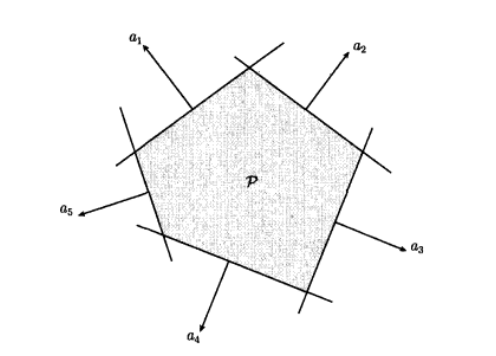

多面体(Polyhedra)
多面体定义为有限个线性等式和不等式的解集。
$\mathcal{P}=\{x|a_j^Tx\leq b_j,j=1,\dots,m,\quad c_i^T=d_j,j=1\dots,p\}$.
因此，多面体时有限个半空间和超平面的交集。仿射集合（例如子空间、超平面、直线）、射线、线段、半空间都是多面体。
多面体是凸集。有界的多面体有时也称为多胞形。下图为五个半空间的交集定义的多面体


可以使用紧凑表达式
$\mathcal{P}=\{x|Ax\prec b,Cx=d\}$.
其中
$A=\left[\begin{matrix}a_1^T\\\vdots\\a_m^T\end{matrix}\right]$, $C=\left[ \begin{matrix}c_i^T\\\vdots\\c_p^T\end{matrix}\right]$
此处的$\prec$代表$\mathbf{R}^m$上的向量不等式（分量不等式）：$u\prec v$表示$u_i\leq v_i,i=1,\dots,m$.
例如，非负象限是具有非负分量的点的集合，即
$\mathbf{R}_+^n=\{x\in\mathbf{R}^n|x_i\geq0 ,i=1,\dots,n\}=\{x\in\mathbf{R}^n
x\succ0\}.$
非负象限既是多面体也是锥，因此被称为多面体锥
单纯形(Simplexes)
单纯形是一类重要的多面体。设$k+1$个点$v_0,\dots,v_k\in\mathbf{R}^n$仿射独立，即$v_1-v_0,\dots,v_k-v_0$线性独立，那么这些点就决定了一个单纯形，如下
$C=\mathbf{conv}\{v_0,\dots,v_k\}=\{\theta_0x_0+\dots+\theta_kv_k|\theta\succ0,\mathbb{1}^T\theta=1\}$,
这个单纯形的仿射维数为$k$，因此也称为$\mathbf{R}^n$空间的$k$维单纯形
一些常见的单纯形
1维单纯形是一条线段；2维单纯形是一个三角形；3维单纯形是一个四面体
单位单纯形是由零向量和单位向量$0,\mathcal{e}_1,\dots,\mathcal{e}_n\in\mathbf{R}^n$决定的$n$维单纯形，可以表示为满足下列条件的向量的集合：$x\succ0,\mathbb{1}^Tx\leq1$
概率单纯形是由单位向量$\mathcal{e}_1,\dots,\mathcal{e}_n\in\mathbf{R}^n$决定的$n-1$维单纯形，可以表示为满足下列条件的向量的集合$x\succ0,\mathbb{1}^Tx=1$。概率单纯形中的向量对应于含有$n$个元素的集合的概率分布，$x_i$可理解为第$i$个元素的概率
使用多面体描述单纯形
为了用多面体来描述单纯形，采用以下步骤将单纯形的定义式变形：
由单纯形的定义式可知，$x\in C$的充要条件是，对于某些$\theta\succ0,\mathbb{1}^T\theta=1$，有$x=\theta_0v_0+\theta_1v_1+\dots+\theta_kv_k$，与之等价地，若定义$y=(\theta_1,\dots,\theta_k)$和$B=\left[v_1-v_0,\dots,v_k-v_0\right]\in\mathbf{R}^{n\times k}$,
可以知道$x\in C$的充要条件是$x=v_0+By$.
对于$y\succ0,\mathbb{1}^Ty\leq1$成立。可以注意到$v_0,\dots,v_k$仿射独立意味着矩阵$B$的秩维$k$。因此，存在非奇异矩阵$A=(A_1,A_2)\in\mathbf{R}^{n\times n}$使得$AB=\left[\begin{matrix}A_1\\A_2\end{matrix}\right]B=\left[\begin{matrix}I\\0\end{matrix}\right]$
对式子$x=v_0+By$左乘$A$，得到$A_1x=A_1v_0+y,\quad A_2x=A_2v_0$
从上面两个式子中可以看出当且仅当$A_2x=A_2v_0$并且向量$y=A_1x-A_1v_0$满足$y\succ0$和$\mathbb{1}^Ty\leq1$，换言之，我们得到了$x\in C$的充要条件为：
$A_2x=A_2v_0,\quad A_1x\succ A_1v_0,\quad \mathbb{1}^TA_1x\leq1+\mathbb{1}^TA_1v_0$
这些是$x$的线性等式和不等式，可以描述一个多面体。
多面体的凸包描述
有限集合$\{v_1,\dots,v_k\}$的凸包是$\mathbf{conv}\{v_1,\dots,v_k\}=\{\theta_1v_1+\dots+\theta_kv_k|\theta\succ0,\mathbb{1}^T\theta=1\}$.
这个凸包是一个有界的多面体，但是无法简单地用多面体地定义式来描述（即难以用线性等式和不等式地集合将其表示出来）
凸包的一个扩展表示是$\{\theta_1v_1+\dots+\theta_kv_k|\theta_1+\dots+\theta_m=1,\theta_i\geq0,i=1,\dots,k\}$。其中$m\leq k$。此处考虑$v_i$的非负线性组合，但是仅仅要求前$m$个系数之和为1。此外，还可以将上式解释为点$v_1,\dots,v_m$的凸包加上$v_{m+1},\dots,v_k$的锥包。上面这个凸包的表示定义了一个多面体。反之也成立，任意多面体可以表示为这样的形式
“如何表示多面体”这一问题有一些非常实用的结果，一个简单的例子是定义在$\mathscr{l}_{\infty}$范数空间的$\mathbf{R}^n$上的单位球$C=\{x||x_i|\leq1\}$
$C$可以由$2n$个线性不等式$\pm e_i^Tx\leq1$(其中$e_i$表示第$i$维的单位向量)表示为多面体的形式。